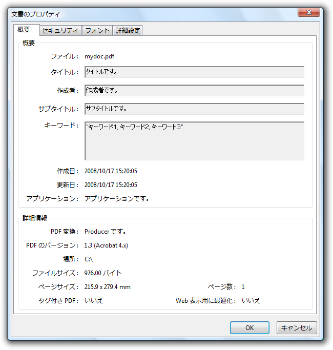
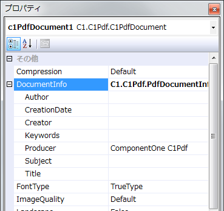

全て展開
全て展開 すべて折りたたむ
すべて折りたたむPDF ドキュメントのドキュメントプロパティを設定すると、タイトル、作成者、サブタイトル、キーワード、アプリケーション、PDF Producer をカスタマイズできます。これらのドキュメントプロパティを設定するには、デザイナまたはコードで Title, Author, Subject, Keywords, Creator, Producer の各プロパティに情報を入力します。

 |
メモ：［説明］の下にある［アプリケーション］を設定するには、Creator プロパティを使用します。ドキュメントプロパティは、PDF ドキュメントの［文書のプロパティ］ダイアログボックスに表示されます。 |
デザイナの場合
プロパティウィンドウで、DocumentInfo プロパティを探し、プロパティノードを展開します。

プロパティの情報を入力し、プロパティの設定が完了したら［Enter］キーを押します。
コードの場合
次のコードを Form_Load イベントに追加します。
-
C1PdfDocumentオブジェクトを作成します。
Visual Basic コードの書き方
Visual Basic コードのコピー' C1PdfDocument オブジェクトを作成します。 Dim pdf As New C1.C1Pdf.C1PdfDocument()
C# コードの書き方
C# コードのコピー// C1PdfDocument オブジェクトを作成します。 C1.C1Pdf.C1PdfDocument pdf = new C1.C1Pdf.C1PdfDocument();
- ドキュメントプロパティを設定します
Title プロパティを設定するには、次のコードを追加します。
Visual Basic コードの書き方
Visual Basic コードのコピーpdf.DocumentInfo.Title = "PDF Creation"
C# コードの書き方
C# コードのコピーpdf.DocumentInfo.Title = "PDF Creation";
Author プロパティを設定するには、次のコードを追加します。
Visual Basic コードの書き方
Visual Basic コードのコピーpdf.DocumentInfo.Author = "I. Author"
C# コードの書き方
C# コードのコピーpdf.DocumentInfo.Author = "I. Author"
Subject プロパティを設定するには、次のコードを追加します。
Visual Basic コードの書き方
Visual Basic コードのコピーpdf.DocumentInfo.Subject = "PDF"
C# コードの書き方
C# コードのコピーpdf.DocumentInfo.Subject = "PDF";
Keywords プロパティを設定するには、次のコードを追加します。
Visual Basic コードの書き方
Visual Basic コードのコピーpdf.DocumentInfo.Keywords = "PDF, creating PDF, PDF files, eBooks"
C# コードの書き方
C# コードのコピーpdf.DocumentInfo.Keywords = "PDF, creating PDF, PDF files, eBooks";
Creator プロパティを設定するには、次のコードを追加します。
Visual Basic コードの書き方
Visual Basic コードのコピーpdf.DocumentInfo.Creator = "My New Application"
C# コードの書き方
C# コードのコピーpdf.DocumentInfo.Creator = "My New Application";
Producer プロパティを設定するには、次のコードを追加します。デフォルトは、「C1Pdf」です。
Visual Basic コードの書き方
Visual Basic コードのコピーpdf.DocumentInfo.Producer = "PDF Creation Industries"
C# コードの書き方
C# コードのコピーpdf.DocumentInfo.Producer = "PDF Creation Industries";
-
ドキュメントをファイルに保存します。
Visual Basic コードの書き方
Visual Basic コードのコピー' ドキュメントをファイルに保存します。 pdf.Save("c:\mydoc.pdf")C# コードの書き方
C# コードのコピー// ドキュメントをファイルに保存します。 pdf.Save(@"c:\mydoc.pdf");